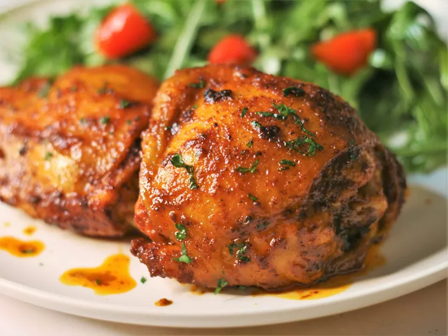

Smoked Paprika Chicken Thighs

Description
Bring a light, smokey flavor to your oven-roasted chicken thighs without having to grill outdoors.
The deep flavors pair well with a cucumber salad or garlic rice.
Ingredients
- 1 tablespoon smoked paprika
- 1 teaspoon granulated garlic
- 1/2 teaspoon ancho chile powder
- 1/2 teaspoon salt
- 1/4 teaspoon ground tumeric
- 1/4 teaspoon freshly ground black pepper
- 1 tablespoon olive oil
- 1 tablespoon cider vinegar
- 4 large bone-in, skin-on chicken thighs
- 2 tablespoons melted butter
- 2 tablespoons minced fresh parsley
Directions
- Preheat oven to 400 degrees Fahrenheit. Grease an 8x8 baking dish.
- In a resealable storage bag, combine paprika,garlic, ancho chile powder, salt, tumeric, and black pepper; add olive oil and apple cider vinegar and mix together. Place chicken thighs into bag, reseal, and massage seasoning mix into chicken. Marinate, refridgerated, for at least 15 minutes.
- Place the chicken in the prepared baking dish and drizzle with melted butter.
- Bake in preheated oven until the chicken is no longer pink inside and the skin is crispy, about 40 minutes, brushing occassionally with the pan drippings. An instant-read therometer insertedj into the thick part of a thigh should read at least 165 degrees. For extra crispy chicken place under the broiler for 1 to 2 minutes. Garnish with parsley.